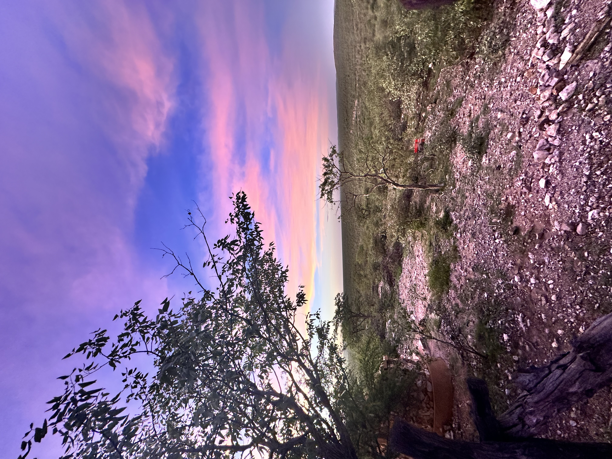
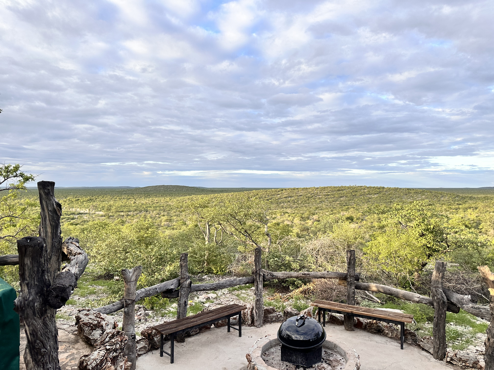
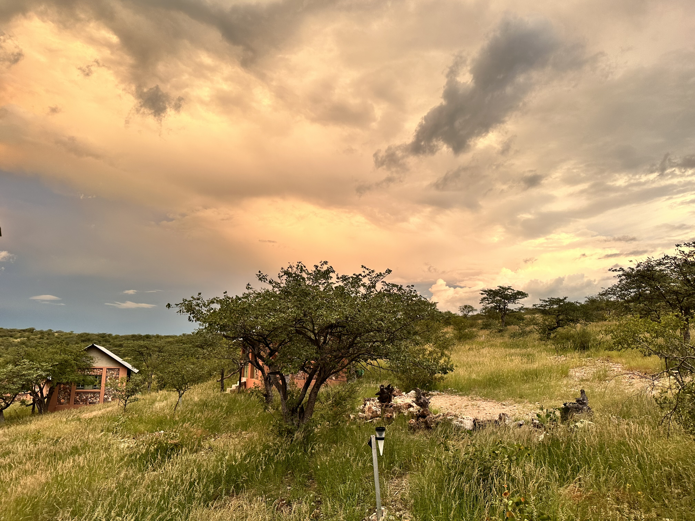

Storie
Waar jou siel tot rus kom
'n Erfenis van die land, 'n belofte aan jou siel.
Daar is plekke op hierdie aarde wat jy nie met jou oë alleen sien nie. Plekke wat jy voel — diep in jou borskas, daar waar jou hart klop en jou siel tuis is. Sielsoord is so 'n plek.
Die naam self sê dit alles. Sielsoord. Die plek waar jou siel rus vind. Nie 'n plattelandse perseel op 'n kaart nie, nie net 'n investering in grond nie — maar 'n stuk van die wêreld wat aan jou toebehoor op 'n manier wat geen stadshuis of strandwoonstetoring ooit kan nie. Hier, op die drumpel van een van Afrika se laaste groot wildernisse, vind jy iets wat die moderne wêreld vergeet het hoe om te bied: stilte. Egte, diepe, heilige stilte. En in daardie stilte, die stem van die land self.
Die eiendom het agt koppies. Een bly by die familie, ses is beskikbaar en een is gereserveer. Die doel is 'n klein groep eienaars wat die grond en natuur verantwoordelik deel.
Die Land — 'n Erfenis van Rots en Ruimte
Sielsoord lê in noordelike Namibië, 108 km noord van Outjo en net 70 km van Okaukuejo — Etosha se hoofhek. Die D2695 gruisweg loop reg tot by die plaas se hek, en 'n bestaande landingstrook net 12 km weg beteken dat jy per vliegtuig hier kan wees wanneer die stemming jou roep. Op koördinate 19.382°S, 15.597°O lê 'n wêreld wat aan beide die antieke en die ewige behoort.
Want dit is wat Sielsoord werklik is: antiek. Die dolomietrots onder jou voete dra 2,500 miljoen jaar se geologiese geskiedenis — dieselfde antieke landskap wat Etosha vorm, strek onder hierdie grond deur. Jy loop letterlik op dieselfde klip as die reuse wat hier gedwaal het toe die wêreld nog jonk was. Die hoogte bo seespieël wissel van 1,170 tot 1,220 meter, wat beteken die lug is dun en skoon, en die horisonne strek oneindig ver.
En wat 'n horisonne. Agt koppies verrys uit die savanne, elk met sy eie karakter, sy eie uitsig, sy eie persoonlikheid. Op die hoogste punt staan die familie se huis — die hart van generasies se bymeenkomste, waar stories vertel is rondom vuur plekke en kinders grootgeword het met die veld as hulle speelgrond. Sewe van hierdie koppies wag nou op nuwe eienaars. Elkeen 'n privaat koninkryk. Elkeen 'n geleentheid om nie net grond te besit nie, maar om 'n stuk van Afrika se siel te besit.

Die Seisoene — Twee Wêrelde op Een Plek
In die winter — van Mei tot Augustus — is die dae skerp en kristalhelder. Nagtemperatuire daal tot ongeveer 10°C, en jy trek 'n trui aan om buite te sit met jou koffie terwyl die sonsopkoms die vlaktes in goud en amber verf. Die lug is wolkeloos, dag ná dag, en die sterre... die sterre is onbeskryflik. Die Melkweg strek soos 'n rivier van lig oor die hemel, so helder dat jy jou skaduwee in die sterlig kan sien. Hier is geen ligbesoedeling nie. Net jy, die stilte, en die heelal wat homself aan jou vertoon.
Dan kom die somer, en die land transformeer. Van November tot Maart styg temperature tot teen 40°C, en die lug word dik en swanger met belofte. En dan — dan kom die reën. Donderstorms rol oor die vlaktes met 'n dramatiese prag wat net Afrika kan bied. Reënbuie val soos gordyne van silwer oor die dorre veld, en binne dae gebeur iets wat na werklike towery lyk: die droë, bruin aarde ontplof in 'n see van groen gras. Wilde blomme bloei — geel, pers, wit — oor hektaar na hektaar. Diere wat wyd versprei was oor die landskap kom saam by watergate, en die hele wêreld lyk asof dit nuut gebore is.
Dit is een van die natuur se grootste vertonings — hierdie transformasie van droog na groen, van stilstand na oorvloed. En jy sit bo-op jou koppie en kyk hoe dit gebeur, jaar na jaar, sonder om ooit dieselfde te wees.

Die Wild — Bure van Genade en Krag
Hulle loop vrylik oor Sielsoord se 2,500 hektaar. Kudde kudu beweeg deur die mopane-bome met 'n waardigheid wat net antilope besit. Gemsbok — daardie ikoniese swart-en-wit gesigte met hulle regop horings soos spiese — staan teen die horison soos beelde uit 'n oertyd. Springbok pronk oor die vlaktes, hulle wit rugkruise flitsend in die son. Hulle is hier. Hulle is altyd hier. Hulle behoort aan niemand en aan iedereen.
Sielsoord grens aan Ongava Private Game Reserve, en Ongava grens aan Etosha Nasionale Park. Ongava lê dus tussen Sielsoord en Etosha; Sielsoord grens nie direk aan Etosha nie.
En in die nag — dan hoor jy hulle. Etosha is sedert 2005 'n amptelike Leeubewaringseenheid. Die leeus brul in die donkerte naby die grensdraad, en die klank rol oor die vlaktes en teen die koppies op tot by jou voordeur. Dit is 'n geluid wat deur jou hele lyf tril — oud en wild en onvervalsbare Afrika. Swartrenosters, luiperds, jagluiperds, hiënas, sebra's, kameelperde, blou wildebeeste, eland, hartebeeste, vlakvarke, jakkalse, bakoorvosse, aartvarkies en selfs die seldsame skaapdier.

Die Lug — 'n Koninkryk van Vlerke
Volstruise loop oor die vlaktes met die waardigheid van konings, hulle lang nekke teen die horison. Breëkoparende en kriptoarende sweef op termiekstrome bo die koppies, hulle skerp oë die veld hieronder skandeer vir enige beweging. Aasvoëls — dié stil skoonmakers van die wildernis — wentel in kringe wat lyk asof hulle deur 'n onsigbare hand geteken is.
Roofvoëls, volstruise en kleiner bosvoëls kan in die streek voorkom. Hulle is nie in elke boom of op elke besoek sigbaar nie; voëlwaarneming hang van seisoen, habitat en geluk af.
Die voëlgalery bevat foto's wat op of rondom Sielsoord geneem is en gee 'n realistiese beeld van wat besoekers kan verwag.
Die Bome — Wagters van die Veld
Jy sal hulle oral sien. Die mopaneboom — Colophospermum mopane — is die onbetwiste koning van hierdie landskap, en sy skoenlapper-vormige blare is onmiskenbaar. In die groter Etosha-streek maak mopanebome ongeveer 80% van alle bome uit, en op Sielsoord is hulle teenwoordig soos stil wagters wat oor generasies heen gestaan het. Hulle skors is geplooi soos die gesig van 'n ou man wat baie gesien het, en hulle skaduwee is die plek waar wild in die middaghitte rus.
Tussen die mopane groei acacia-soorte met hulle skerp dorings en sagte geel blomtrosse, commiphora-bome met hulle papieragtige skors, en terminalia met hulle donker, leeragtige blare. In die reënseisoen verskyn welige gras en wilde blomme tussen hierdie ou bome, en die hele landskap verander van goudbruin na die diepste groen wat jy ooit gesien het. In die droë seisoen, as die gras terugtrek en die kleure na amber en oker verskuif, toon hierdie bome hulle ware karakter — hard en droogte-bestand, oorlewers wat al eeue se droogtes deurgestaan het en nog steeds daar staan. Soos die mense wat hierdie land liefhet.
Die Geleentheid — Sewe Koppies, Sewe Koninkryke
Sielsoord bied privaat koppies binne 'n gedeelde 2,500 hektaar plaas. Elke beskikbare koppie kos N$4 miljoen. Kopers moet die eiendomsreg, boureëls, dienste en koste volledig nagaan voordat hulle besluit.
Dink daaraan. Jy staan op jou eie koppie, 1,200 meter bo seespieël, en jy kyk oor Etosha — oor die 4,760 vierkante kilometer se soutpan wat die inheemse bevolking "Die Groot Wit Plek" noem — en in die verte, aan die einde van die sigbare wêreld, sien jy die donderstorms van Angola in die naglig flikker. Jy hoor Etosha se leeus. Jy sien die renosters in die skemer. Jy is omsingel deur die rykste wildernis in Suider-Afrika, en tog staan jy op grond wat joune is.
Die infrastruktuur is reeds daar. Twee boorgate met sonpompe versorg die wild se waterbehoeftes deur die jaar. 'n Elektriese sekuriteitsheining met PTZ-kameras strek langs die Etosha-grens. En as jy wil bou — jou eie lodge, jou eie toevlug, jou eie stukkie van die droom — dan is die grond gereed. Net jy, jou visie, en een van die oudste landskappe op aarde.
Hierdie is nie 'n advertensie nie. Hierdie is 'n uitnodiging.
Sielsoord is 'n plek wat verandering bring — nie net in jou portefeulje nie, maar in jouself. Mense kom hierheen om te ontsnap, en hulle bly omdat hulle besef dat dit wat hulle gesoek het nie in 'n stad te vinde is nie. Dit is hier. In die oggendlig oor die mopaneveld. In die brul van 'n leeu in die donker. In die stilte tussen twee hartslae bo-op 'n koppie wat 2,500 miljoen jaar oud is.
Ons verkoop nie net grond nie. Ons deel 'n stuk van ons siel met diegene wat dit sal verstaan — mense wat weet dat die grootste luukse in die lewe nie dinge is nie, maar plekke. Oomblikke. Stilte. Ruimte. 'n Plek waar jou kinders die sterre kan tel en die wild kan hoor en weet wat dit beteken om deel te wees van iets groter as hulself.
Waar jou siel tot rus kom. Dit is nie net 'n slagspreuk nie. Dit is 'n belofte. En dit wag op jou, hier, in die hart van die Namibiese wildernis.